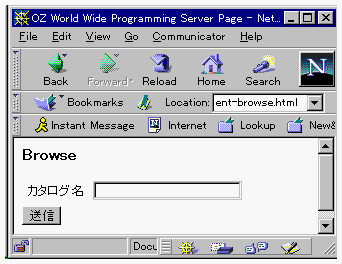

リモートカタログの照会
OZCGIサーバが起動しているマシン上のカタログサーバに登録されたカタログを照会することができます。

- 「HTML文書のカスタマイズ」での設定を行ったwwps-menu.htmlをWWWブラウザで開いて、Component
Browse ボタンをクリックしてください。

- 「カタログ名」に照会したいカタログを指定します。(カタログサーバのGODを指定してください。)
上記の1つのエリアの入力を行って送信ボタンをクリックすると、WWWサーバと接続され、WWWサーバ上のカタログサーバに登録されているカタログを表示する画面に切り替わります。
(c) 1996-1998 IPA, ETL, AT21, FSIABC, FXIS,
InArc, MRI, NUL, SBC, Sharp, TEC, TIS. All rights reserved.